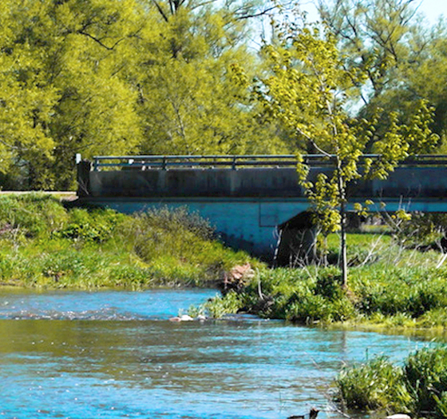
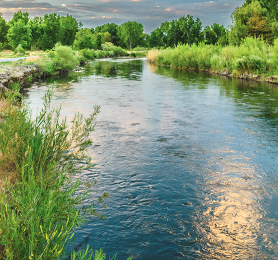

Thames River Anglers Association
TRAA LINKS
Sites of Interest to the 'ConserFishinist'
Conservation
Carolinian Canada
Friends of the Thames / Thames River Cleanup
- Carolinian Canada - Carolinian Canada’s diverse network advances a strategic ‘Big Picture’ vision for healthy landscapes and a green future in Canada’s deep south.
- Friends of the Thames / Thames River Cleanup - The Friends of the Thames has been organising and promoting the Annual Thames River Cleanup every spring for the past 14 years. Environmentally concerned volunteers, landowners, clubs, organizations and municipalities have come together during Earth week to help clean up portions of the Thames River watershed areas. Check out their Contacts page to find out who or what organization is cleaning up your favourite section of the Thames River.


More Conservation
Nature London
North Shore Steelhead Association
Ontario Streams
Ontario Federation of Anglers and Hunters
Trout Unlimited Canada
- Nature London - Nature London undertakes a variety of projects to promote environmental awareness, enhance habitat and protect natural areas. MFN members participate in the Christmas Bird Count, the annual Butterfly Count and other initiatives which encourage the study of local natural history.
- North Shore Steelhead Association - The primary concern of the founding members was the protection and enhancement of the north shore migratory Rainbow Trout (Steelhead) fishery, but their foresight led to the inclusion of all coldwater species in our constitution. This, by default, includes all species that use Lake Superior tributaries in their life cycle.
- Ontario Streams - To promote the protection and rehabilitation of Ontario's rivers and streams through education and community action.
- Ontario Federation of Anglers and Hunters - You may think you know who they are and what they do, but check the site, you may be surprised!
- Trout Unlimited Canada - To conserve, protect and restore Canada's freshwater resources and their watersheds for current and future generations.
Conservation Authorities
Ausable Bayfield Conservation Authority
Credit Valley Conservation Authority
Essex Region Conservation Authority
Grand River Conservation Authority
Halton Region Conservation Authority
Hamilton Region Conservation Authority
Long Point Region Conservation Authority
Lakehead Region Conservation Authority
Lower Thames Valley Conservation Authority
Metro Toronto & Region Conservation Authority
Rideau Valley Conservation Authority
St.Clair Region Conservation Authority
Upper Thames River Conservation Authority
Governmental Entities
Note
Note:
The links appearing on this page have been included for the interest of TRAA members and other like-minded individuals. We do our best to monitor what these sites offer as content. If you are concerned with any aspect of any of the linked sites, please contact the Webmaster. Sites linked to this page that are deemed unsuitable for any reason at the sole discretion of the TRAA, will be removed without notice or explanation. Like-minded organizations wishing to have their sites linked to this page may contact the Webmaster. Your site's suitability for linking to this page is a decision made solely and strictly by the TRAA.
TOP